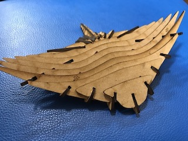
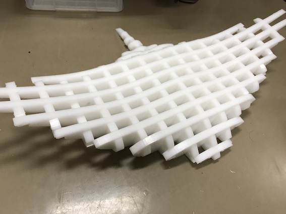

そうだ、エイに乗ろう。
・大きなエイの椅子を作りたい！
誰しも一度はエイに乗りたいものそんな夢を叶えたい！！
前回までのあらすじ

試作１号（レーザーカッター）

試作２号（レーザーカッター）

はめ込みテスト（木バージョン）※この時に仕上げ代のミスがあった

はめ込みテスト（PEバージョン）※オフセット0.1が良いと判明
進捗状況
•切削の工程全終了
かなり時間がかかったが、３０パーツ全て切削できた

しかしまた問題発生！
ギリギリすぎてはまりづらい・・・
そこで引っかかる角の部分をヤスリがけすることで、入りやすくすることに
+トンカチでとんとんしたら入りました！

ものは完成したが、どう展示するかが大きな問題
夏休みをうまく使って、展示用の土台を作りたい
展示案
案１：壁にかける
最初に出ていた案で、この展示のメイン展示物、、、になるはずだった。だが、壁に貼ると曲線が全く意味をなさないことに気づきこの案はボツとなった。（この時メインも剥奪）
案２：天井に吊るす
個人的にこの案を一番通したかった。しかし、作品自体の重さが16キロと重く、天井に吊るすリスクが高いことから断念した。
案３：土台の上に置く
最終的にこの案を採用した。この作品を作ろうと思った当初の想いを忘れていた。
エイに乗りたい！！